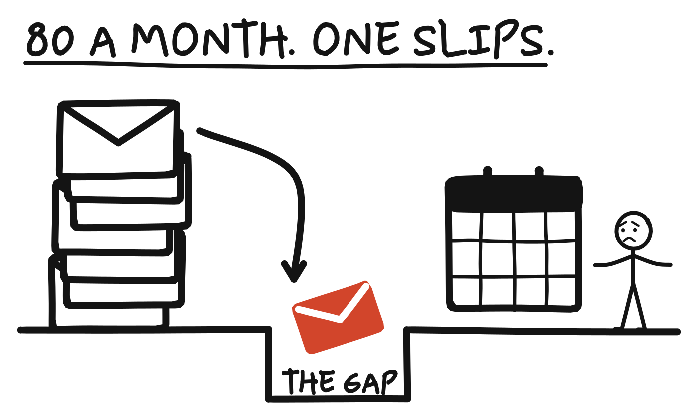
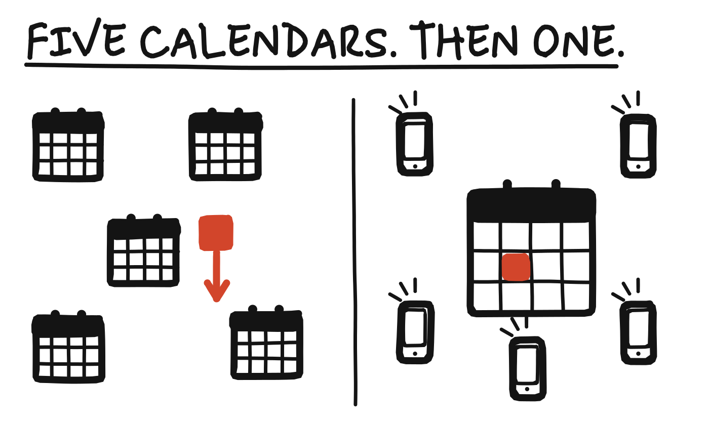

Rough draft
For Amber
Never miss the next one
A 20-minute fix so nothing falls through the cracks again. Made for Amber, with a few drawings.
Amber, a parent-teacher meeting slipped past you.
Not because you don't care. You care more than anybody.
It slipped because the date never made it onto your calendar. And a calendar can only remind you of what's on it.
Here's why that keeps happening, and how to close it for good tonight.
Look at what's coming at you
A survey of 2,004 parents (Yahoo, 2024) found the average parent gets about 4 emails a day about their kids, school and activities. That's about 20 a week, 80 a month.
That's the average. You have three kids.

Add the school app, the texts from other parents, the flyer in the backpack.
Somewhere in that pile is one date that matters. It slides off, and nobody notices until it's gone.
That space has a name: the gap
The gap is the space between where a date shows up and your calendar.
The email is in your inbox. The flyer is on the counter. Your calendar has no idea either one exists.
Every date you've ever missed fell in the gap. There's just no bridge.
So the fix is two things:
- One place every date lands, that buzzes everybody's phone.
- A quick way to get dates into it, the moment you see them.
Part one: one calendar for the whole family
Right now everyone has their own calendar, and dates fall between them.
Don't try to sync them all. Make one that everybody shares.

Step 1. Make a Family calendar.
You need a Google account (a Gmail address works). Go to families.google.com and start a family group. Google gives every family group a shared calendar called "Family," automatically.
On an iPhone? Download the free Google Calendar app and sign in with that same account. The Family calendar shows up there. (Apple's Family Sharing has a Family calendar too, but the steps below are for Google.)
Step 2. Add everyone.
Invite your husband, and any kid 13 or older with their own phone. They have to accept the invite before they see anything.
Younger kid, or no phone? No account needed. Start their events with their name, like "(name): dentist." Your phone buzzes for them.
Step 3. Turn on the buzzes, on every phone.
This is the step people miss. Each phone has to be told once. It doesn't copy from yours.
In the Google Calendar app, open Settings, tap the Family calendar, and find its notifications. Set two: 1 day before and 2 hours before.
On an iPhone, also open the phone's own Settings, then Notifications, then Google Calendar, and make sure it's allowed.
Grab the kids' phones and do theirs too.
Part two: catch every date the moment you see it
Here's the rule: whoever sees a date, catches it. Right then.
And here's where ChatGPT earns its keep.

Step 4. Snap it, hand it to ChatGPT.
See a date on a flyer, an email, a text, the school app? Take a photo or a screenshot. In the ChatGPT app, tap the + to add the picture, and say:
What's the date, time and place in this? Write it up as a calendar event, with who it's for at the front.
ChatGPT reads the picture and pulls out what you need. Then add it in the Google Calendar app, and pick "Family" before you save. About a minute.
Paid ChatGPT? You can connect Google Calendar in ChatGPT's settings. If it asks permission to edit your events, it may be able to add them for you. Check that each one landed on the Family calendar.
Your husband doesn't use ChatGPT? He can add it straight in the app, or text the photo to you.
Step 5. The Sunday look.
Ten minutes at Sunday dinner. Open the week in the app and read it out loud. Anything that slipped past gets caught here.
Now test it.
Make an event called TEST on the Family calendar, starting 2 hours and 5 minutes from now. In 5 minutes, every phone should buzz.
One didn't? That phone missed Step 3.
Me too
I've missed plenty. The birthday I remembered at the last minute. The anniversary that snuck up on me. A bill I forgot to pay. Something I was supposed to pick up and didn't.
So I stopped trusting my memory. Last month the city gave me a date to put my old couch out for pickup. I had AI put it on my calendar with two buzzes. Done.
Nobody remembers this stuff. The people who look organized just have something remembering for them.
That's all this is.
Tonight
Steps 1 to 3, then the test. Twenty minutes, maybe a little more with bedtime.
When every phone buzzes, text me.
The calendar remembers. You just catch it.
Daegan
Bonus: three little ChatGPT tricks
1. It reads photos. Permission slips, team schedules, the lunch menu, a screenshot of a group text. Snap it and ask, "What dates are in here?"
2. It can check your email. (paid ChatGPT, with Gmail connected in its settings) Ask:
What emails from this week need a reply from me, or have a date in them?
3. It can nudge you. (paid ChatGPT) Say:
Every Sunday at 5pm, remind me to look at our family calendar.
It sends you a notification every week. (Turn on ChatGPT's notifications on your phone.)